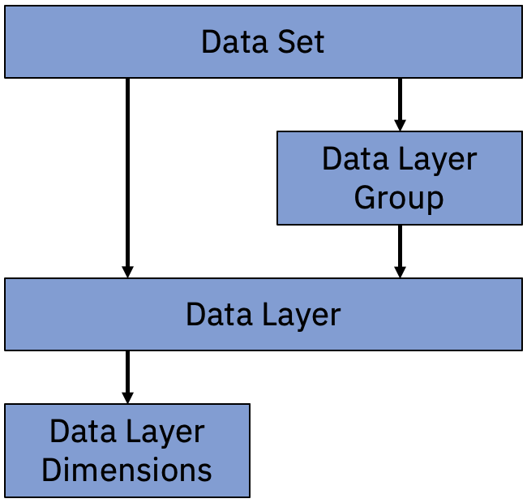

Quick Start - Catalog¶
IBM Environmental Intelligence Service: Geospatial APIs contains a several petabytes of queryable data. It is therefore necessary to understand, briefly, the storage data model and how the metadata can be retrieved.
The Storage Model¶
The storage model in Geospatial APIs is illustrated by the following diagram:

Data Sets¶
The Data Set is the highest tier in the hierarchy. It functions as a collection for Data Layers for which defaults (e.g. attributes, security controls etc) can be applied. In most cases, the Data Set serves as a collection for interrelated data, usually acquired contemporaneously, (e.g. the ‘bands’ in the data provided by the ESA Sentinel 2 satellite) however, there is nothing that restricts a Data Set from use on more informal terms.
Data Layers¶
The Data Layer is the tier of the hierarchy that is directly connected to the storage sub-system. The metadata defined here overwrites the Data Set defined defaults and applies directly to the manner in which the data is stored. When querying data from Geospatial APIs, this tier is the entry point.
In configuring a Data Layer, two important attributes, in particular, are the level and the datatype (as they determine storage size and speed of retrieval at query time):
the level is a granularity band range,
the datatype is the data type that will be applied to the storage.
The most efficient level and type that can contain the data to be uploaded to a Data Layer should always be used.
Level:
29 (11.125 cm at equator)
28 (22.25 cm at equator)
27 (44.5 cm at equator)
26 (0.89 m at equator)
25 (1.78 m at equator)
24 (3.56 m at equator)
23 (7.12 m at equator)
22 (14.24 m at equator)
21 (28.48 m at equator)
20 (56.96 m at equator)
19 (113.92 m at equator)
18 (227.84 m at equator)
17 (455.68 m at equator)
16 (911.36 m at equator)
15 (1.82272 km at equator)
14 (3.64544 km at equator)
13 (7.29088 km at equator)
12 (14.58176 km at equator)
11 (29.16352 km at equator)
10 (58.32704 km at equator)
9 (116.65408 km at equator)
8 (233.30816 km at equator)
7 (466.61632 km at equator)
6 (933.23264 km at equator)
5 (1866.46528 km at equator)
4 (3732.93056 km at equator)
3 (7465.86112 km at equator)
2 (14931.72224 km at equator)
1 (29863.44448 km at equator)
Data Types for Raster:
bt (Byte)
sh (Short Integer)
in (Integer)
db (Double)
fl (Float)
Data Layer Dimensions¶
A Data Layer Dimension gives context to the value recorded for the data layer. For example, weather forecast models typically create a prediction for each day in the future for a number of days. When the weather model is run on a Monday it will generate a predictions for temperature on Tuesday, Wednesday, Thursday, Friday and Saturday. When the forecast is run on the Tuesday the predications are made for Wednesday, Thursday, Friday etc. The days for which predictions are generated are the data layer dimensions.
Imagine a temperature prediction data layer which records the temperate against a spatial and temporal key:
lat/long/timestamp = temperature
This only stores one temperature value per key. Each time we run the weather model we generate 5 temperature predictions. One for each of the 5 future days. How can we store them? The answer is that the key is extended with a dimension:
lat/long/timestamp/dimension = temperature
Now each place and time can also have 5 predictions associated with it.
In Geospatial APIs we typically arrange that data so that:
timestamp = the date/time that the value is valid
dimenion = the predicted day number (horizon) from the model run
Using this scheme is it straightforward to compare different model predictions for the same date and time.
Searching the Catalog¶
Search by Word¶
In order to search the whole catalog for a term, you can use the catalog sub-module and the method search:
catalog.search(<search_term>)
In the example below, the catalog is searched for all datasets and datalayers that contain references to Sentinel. The information returned is a reduced version of the metadata held by the catalog that can be used to determine the prima facie usefulness of the returned datasets and datalayers to the user.
[1]:
import os
import ibmpairs.authentication as authentication
import ibmpairs.client as client
import ibmpairs.catalog as catalog
EI_API_KEY = os.environ.get('EI_API_KEY')
EI_TENANT_ID = os.environ.get('EI_TENANT_ID')
EI_ORG_ID = os.environ.get('EI_ORG_ID')
ei_client = client.get_client(api_key = EI_API_KEY,
tenant_id = EI_TENANT_ID,
org_id = EI_ORG_ID)
search_by_word = catalog.search("Sentinel")
search_by_word
2023-08-15 09:05:47 - paw - INFO - The client authentication method is assumed to be OAuth2.
2023-08-15 09:05:47 - paw - INFO - Legacy Environment is False
2023-08-15 09:05:49 - paw - INFO - Authentication success.
2023-08-15 09:05:49 - paw - INFO - HOST: https://api.ibm.com/geospatial/run/na/core/v3
[1]:
| dataset_id | data_layer_id | data_layer_name | data_layer_description_short | data_layer_description_long | data_layer_level | data_layer_type | data_layer_unit | data_set_id | data_set_name | data_set_description_short | data_set_description_long | |
|---|---|---|---|---|---|---|---|---|---|---|---|---|
| 0 | 176 | 51648 | Band 11 (SWIR 1612 nm) | Central wavelength 1613.7/1610.4 nm, bandwidth... | 22 | Raster | 176 | High res imagery (ESA Sentinel 2) (TOA) | This dataset contains layers from the Level-1C... | Images from the European Space Agency Sentinel... | ||
| 1 | 176 | 50364 | hollstein | A cloud mask as defined in a paper by Hollstei... | A cloud mask as defined in a paper by Hollstei... | 23 | Raster | 176 | High res imagery (ESA Sentinel 2) (TOA) | This dataset contains layers from the Level-1C... | Images from the European Space Agency Sentinel... | |
| 2 | 176 | 49358 | Band 4 (red) | Central wavelength 664.5/665.0 nm, bandwidth 3... | 23 | Raster | 176 | High res imagery (ESA Sentinel 2) (TOA) | This dataset contains layers from the Level-1C... | Images from the European Space Agency Sentinel... | ||
| 3 | 176 | 49359 | Band 8 (NIR) | Central wavelength 835.1/833.0 nm, bandwidth 1... | 23 | Raster | 176 | High res imagery (ESA Sentinel 2) (TOA) | This dataset contains layers from the Level-1C... | Images from the European Space Agency Sentinel... | ||
| 4 | 176 | 50096 | Band 10 (SWIR 1370 nm) | Central wavelength 1373.5/1376.9 nm, bandwidth... | 20 | Raster | 176 | High res imagery (ESA Sentinel 2) (TOA) | This dataset contains layers from the Level-1C... | Images from the European Space Agency Sentinel... | ||
| 5 | 176 | 51649 | Band 12 (SWIR 2202 nm) | Central wavelength 2202.4/2185.7 nm, bandwidth... | 22 | Raster | 176 | High res imagery (ESA Sentinel 2) (TOA) | This dataset contains layers from the Level-1C... | Images from the European Space Agency Sentinel... | ||
| 6 | 177 | 49464 | Normalized difference vegetation index | A measure of the amount of vegetation at the p... | NDVI is generally calculated as (NIR - VIR) / ... | 23 | Raster | 177 | High res imagery (ESA Sentinel 2) | Images from the European Space Agency Sentinel... | Sentinel-2 is a set of two satellites in polar... | |
| 7 | 177 | 49683 | Band 6 (vegetation red edge) | Central wavelength 740.2/739.1 nm, bandwidth 1... | 22 | Raster | 177 | High res imagery (ESA Sentinel 2) | Images from the European Space Agency Sentinel... | Sentinel-2 is a set of two satellites in polar... | ||
| 8 | 177 | 49680 | Band 2 (blue) | Central wavelength 496.6/492.1 nm, bandwidth 9... | 23 | Raster | 177 | High res imagery (ESA Sentinel 2) | Images from the European Space Agency Sentinel... | Sentinel-2 is a set of two satellites in polar... | ||
| 9 | 177 | 49689 | Water vapor | Atmospheric water vapor content derived from b... | "Water vapour retrieval over land is performed... | 22 | Raster | 177 | High res imagery (ESA Sentinel 2) | Images from the European Space Agency Sentinel... | Sentinel-2 is a set of two satellites in polar... | |
| 10 | 177 | 49360 | Band 4 (red) | Central wavelength 664.5/665.0 nm, bandwidth 3... | 23 | Raster | 177 | High res imagery (ESA Sentinel 2) | Images from the European Space Agency Sentinel... | Sentinel-2 is a set of two satellites in polar... | ||
| 11 | 177 | 49361 | Band 8 (NIR) | Central wavelength 835.1/833.0 nm, bandwidth 1... | 23 | Raster | 177 | High res imagery (ESA Sentinel 2) | Images from the European Space Agency Sentinel... | Sentinel-2 is a set of two satellites in polar... | ||
| 12 | 177 | 50250 | Cloud probability map | A 20m mask indicating the calculated probabili... | 22 | Raster | 177 | High res imagery (ESA Sentinel 2) | Images from the European Space Agency Sentinel... | Sentinel-2 is a set of two satellites in polar... | ||
| 13 | 177 | 49686 | Band 11 (SWIR 1610 nm) | Central wavelength 1613.7/1610.4 nm, bandwidth... | 22 | Raster | 177 | High res imagery (ESA Sentinel 2) | Images from the European Space Agency Sentinel... | Sentinel-2 is a set of two satellites in polar... | ||
| 14 | 177 | 49687 | Band 12 (SWIR 2200 nm) | Central wavelength 2202.4/2185.7 nm, bandwidth... | 22 | Raster | 177 | High res imagery (ESA Sentinel 2) | Images from the European Space Agency Sentinel... | Sentinel-2 is a set of two satellites in polar... | ||
| 15 | 177 | 49690 | Band 1 (coastal aerosol) | Central wavelength 443.9/442.3 nm, bandwidth 2... | 20 | Raster | 177 | High res imagery (ESA Sentinel 2) | Images from the European Space Agency Sentinel... | Sentinel-2 is a set of two satellites in polar... | ||
| 16 | 177 | 49688 | Aerosol optical thickness | "AOT describes attenuation of sunlight by a co... | For Sentinel 2 level 2A products, the "aerosol... | 22 | Raster | 177 | High res imagery (ESA Sentinel 2) | Images from the European Space Agency Sentinel... | Sentinel-2 is a set of two satellites in polar... | |
| 17 | 177 | 49691 | Band 9 (water vapor) | Central wavelength 945.0/943.2 nm, bandwidth 2... | 20 | Raster | 177 | High res imagery (ESA Sentinel 2) | Images from the European Space Agency Sentinel... | Sentinel-2 is a set of two satellites in polar... | ||
| 18 | 177 | 49685 | Band 8a (narrow IR) | Central wavelength 864.8/864.0 nm, bandwidth 3... | 22 | Raster | 177 | High res imagery (ESA Sentinel 2) | Images from the European Space Agency Sentinel... | Sentinel-2 is a set of two satellites in polar... | ||
| 19 | 177 | 49684 | Band 7 (vegetation red edge) | Central wavelength 782.5/779.7 nm, bandwidth 2... | 22 | Raster | 177 | High res imagery (ESA Sentinel 2) | Images from the European Space Agency Sentinel... | Sentinel-2 is a set of two satellites in polar... | ||
| 20 | 177 | 49681 | Band 3 (green) | Central wavelength 560.0/559.0 nm, bandwidth 4... | 23 | Raster | 177 | High res imagery (ESA Sentinel 2) | Images from the European Space Agency Sentinel... | Sentinel-2 is a set of two satellites in polar... | ||
| 21 | 177 | 49682 | Band 5 (vegetation red edge) | Central wavelength 703.9/703.8 nm, bandwidth 1... | 22 | Raster | 177 | High res imagery (ESA Sentinel 2) | Images from the European Space Agency Sentinel... | Sentinel-2 is a set of two satellites in polar... | ||
| 22 | 177 | 49362 | Scene classification | Pixel-by-pixel classification in image of 4 ty... | The different labels and classifications are: ... | 22 | Raster | 177 | High res imagery (ESA Sentinel 2) | Images from the European Space Agency Sentinel... | Sentinel-2 is a set of two satellites in polar... | |
| 23 | 335 | 50254 | VH polarization | Synthetic Aperture Radar with VH Partial polar... | The data is preprocessed following correction ... | 23 | Raster | 335 | Satellite based radar (ESA Sentinel 1) | Sentinel-1 is an imaging radar mission providi... | Sentinel-1 provides dual polarization capabili... | |
| 24 | 335 | 50253 | VV polarization | Synthetic Aperture Radar with VV Partial polar... | The data is preprocessed following correction ... | 23 | Raster | 335 | Satellite based radar (ESA Sentinel 1) | Sentinel-1 is an imaging radar mission providi... | Sentinel-1 provides dual polarization capabili... |
The full metadata for the dataset or datalayer can then be retrieved by subsequent methods, e.g.:
[2]:
dl = catalog.get_data_layer(id = "49464")
print(dl)
{
"color_table": {
"colors": "153A91,84F588,FFF787,FF7C3B,FF1921",
"id": "4",
"name": "Spectral"
},
"created_at": "1593733829000",
"crs": "",
"data_layer_response": {},
"dataset_id": "177",
"datatype": "sh",
"description_long": "NDVI is generally calculated as (NIR - VIR) / (NIR + VIR). For Sentinel 2, this translates to (band 8 - band 4) / (band 8 + band 4).",
"description_short": "A measure of the amount of vegetation at the pixel.",
"id": "49464",
"interpolation": "bilinear",
"latitude_max": 90.0,
"latitude_min": -90.0,
"level": 23,
"longitude_max": 180.0,
"longitude_min": -180.0,
"name": "Normalized difference vegetation index",
"name_alternate": "Normalized difference vegetation index",
"permanence": true,
"properties": {},
"rating": 1.0,
"spatial_coverage": {
"country": [
"Belgium",
"Bolivia",
"France",
"Germany",
"India",
"Indonesia",
"Luxembourg",
"Netherlands",
"Switzerland",
"Thailand",
"United Kingdom",
"United States of America"
]
},
"temporal_max": "1665604800000",
"temporal_min": "1438387200000",
"type": "R",
"units": "[-1, 1]",
"updated_at": "1665648134000"
}
Search by ID¶
In the event that you already know the Geospatial APIs ID for a data set or data layer the search method can also be used to retrieve the limited metadata returned by the search method:
[3]:
search_by_id = catalog.search("49464")
search_by_id
[3]:
| dataset_id | data_layer_id | data_layer_name | data_layer_description_short | data_layer_description_long | data_layer_level | data_layer_type | data_layer_unit | data_set_id | data_set_name | data_set_description_short | data_set_description_long | |
|---|---|---|---|---|---|---|---|---|---|---|---|---|
| 0 | 177 | 49464 | Normalized difference vegetation index | A measure of the amount of vegetation at the p... | NDVI is generally calculated as (NIR - VIR) / ... | 23 | Raster | 177 | High res imagery (ESA Sentinel 2) | Images from the European Space Agency Sentinel... | Sentinel-2 is a set of two satellites in polar... |
Retrieve Metadata¶
A series of helper methods can be used to retrieve the metadata concerning Data Sets, Data Layers and Data Layer Dimensions. The results for these catalog methods can be displayed (returned in a truncated form as a dataframe):
ds_list = catalog.get_data_sets()
ds_list.display()
or printed (which returns a string representation of an object):
ds = catalog.get_data_set(id = <data_set_id>)
print(ds)
Where applicable, the methods also allow for return of lists of embedded objects (e.g. Data Layers per Data Set):
catalog.get_data_layers(data_set_id = <data_set_id>)
Get a List of Data Sets¶
In order to return all data sets available to a user, you can execute the get_data_sets method:
[4]:
ds_list = catalog.get_data_sets()
ds_list.display()
[4]:
| id | name | description_short | description_long | |
|---|---|---|---|---|
| 0 | 574 | 15-46 day ECMWF weather forecast (ML post-proc... | ML Post-processed temperature and precipitatio... | ML Post-processed temperature and precipitatio... |
| 1 | 575 | 1-15 day ECMWF weather forecast (ML post-proce... | ML Post-processed temperature and precipitatio... | ML Post-processed temperature and precipitatio... |
| 2 | 306 | Atmospheric weather (ERA5) | A global reanalysis data set produced by ECMWF... | ERA5 is the direct successor to the ERA Interi... |
| 3 | 63 | High resolution aerial imagery (USDA NAIP) | High resolution (<1m) aerial imagery from the ... | National Agriculture Imagery Program (NAIP) ac... |
| 4 | 369 | Buoy Data Wave Summary | Precise wave conditions around bouys belonging... | Local measurements of wave attributes and thei... |
| ... | ... | ... | ... | ... |
| 93 | 379 | US healthcare infrastructure | Dataset includes data layers with relevant inf... | NaN |
| 94 | 392 | US mobility (Descartes Labs) | Mobility data derived from mobile devices. | Note that the exact source of the data -- i.e.... |
| 95 | 93 | Soil properties USA | The USA soil property data is derived from the... | It contains information about soil as collecte... |
| 96 | 332 | Ocean wave forecast (ECMWF ENS) | 15-day ahead forecast of ocean conditions. | The ECMWF Ensemble Prediction System (EPS) cre... |
| 97 | 284 | Wildfire risk potential | Wildfire Hazard Potential can help to inform e... | Wildfire Hazard Potential* for the conterminou... |
98 rows × 4 columns
Get a Data Set¶
In order to return all metadata about a Data Set, the get_data_set method can be used with a provided Data Set ID:
[5]:
ds = catalog.get_data_set(id = "177")
print(ds)
{
"category": {
"id": 1,
"name": "Satellite"
},
"created_at": "1593733829000",
"crs": "",
"data_set_response": {},
"data_source_attribution": "Source: European Space Agency - ESA; Contains modified Copernicus Sentinel data [2018 and Ongoing]",
"data_source_description": "Level-2A is generated by the Payload Data Ground Segment using the Sen2Cor processor. Level-2A products are made available to users via the Copernicus Open Access Hub: https://scihub.copernicus.eu/dhus/#/home",
"data_source_name": "European Space Agency Sentinel-2",
"description_long": "Sentinel-2 is a set of two satellites in polar orbit 180 degrees apart. It monitors land surface and coastal waters every 5 days at the equator and more frequently at mid-latitudes. The coverage is between latitudes 56\u00b0 south and 84\u00b0 north. Images are in 13 spectral bands at various ground resolutions: 4 bands at 10 m, 6 at 20 m and 3 at 60 m; the orbital swath is 290 km wide. Level 2A (L2A) images are 100x100 km ortho-rectified and spatially registered on a global reference system; they are corrected for the atmosphere so they represent ground conditions. Currently Geospatial APIs ingests Bands 4 (red), 8 (NIR) and SCL (Scene Classification). An NDVI layer, called \"NDVI sh\", is calculated from Bands 4 and 8. Tiles are ingested on request. Currently there is some coverage for tiles in USA, Brazil, India and the Netherlands for selected days in 2018 and 2019. Timestamps in this dataset are rounded down to 0:00 UTC from the Satellite's sensing time.",
"description_short": "Images from the European Space Agency Sentinel 2 satellite pair which view land surface regions in 13 spectral bands every 5 days or faster.",
"id": "177",
"key": "esa-sentinel-2-l2a",
"lag_horizon": "0 years 0 mons 0 days 0 hours 0 mins 432000.0 secs",
"lag_horizon_description": "Data is available within 24 hours.",
"latitude_max": 90.0,
"latitude_min": -90.0,
"level": 23,
"longitude_max": 180.0,
"longitude_min": -180.0,
"max_layers": 30,
"name": "High res imagery (ESA Sentinel 2)",
"name_alternate": "ESA Sentinel 2 Level-2A",
"offering_status": "Commercial Use",
"permanence": true,
"properties": {
"application": [
"Agriculture"
],
"domain": [
"Land surface"
],
"sector": [
"Animals/livestock",
"Transportation/infrastructure",
"Vegetation/crops"
],
"source": [
"Satellite",
"Survey"
],
"type": [
"Data product"
]
},
"rating": 4.0,
"spatial_coverage": {
"country": [
"Belgium",
"Bolivia",
"France",
"Germany",
"India",
"Indonesia",
"Luxembourg",
"Netherlands",
"Switzerland",
"Thailand",
"United Kingdom",
"United States of America"
]
},
"status": "Active",
"temporal_max": "1665604800000",
"temporal_min": "1438387200000",
"temporal_resolution": "0 years 0 mons 0 days 0 hours 0 mins 432000.0 secs",
"temporal_resolution_description": "5 days at the equator, less at mid latitudes.",
"update_interval_description": "Uploads are run daily. However, note the temporal resolution.",
"update_interval_max": "0 years 0 mons 0 days 0 hours 0 mins 86400.0 secs",
"updated_at": "1665645277000"
}
Get a List of Data Layers per Data Set¶
As discussed above in §. The Storage Model, Data Layers belong to Data Sets. The get_data_layers method can be used to return a list of all Data Layers in a specific Data Set by providing the Data Set ID:
[6]:
dl_list_by_set = catalog.get_data_layers(data_set_id = "177")
dl_list_by_set.display()
[6]:
| dataset_id | id | name | description_short | description_long | level | type | unit | |
|---|---|---|---|---|---|---|---|---|
| 0 | 177 | 49464 | Normalized difference vegetation index | A measure of the amount of vegetation at the p... | NDVI is generally calculated as (NIR - VIR) / ... | NaN | nan | NaN |
| 1 | 177 | 49683 | Band 6 (vegetation red edge) | Central wavelength 740.2/739.1 nm, bandwidth 1... | NaN | NaN | nan | NaN |
| 2 | 177 | 49680 | Band 2 (blue) | Central wavelength 496.6/492.1 nm, bandwidth 9... | NaN | NaN | nan | NaN |
| 3 | 177 | 49689 | Water vapor | Atmospheric water vapor content derived from b... | "Water vapour retrieval over land is performed... | NaN | nan | NaN |
| 4 | 177 | 49360 | Band 4 (red) | Central wavelength 664.5/665.0 nm, bandwidth 3... | NaN | NaN | nan | NaN |
| 5 | 177 | 49361 | Band 8 (NIR) | Central wavelength 835.1/833.0 nm, bandwidth 1... | NaN | NaN | nan | NaN |
| 6 | 177 | 50250 | Cloud probability map | A 20m mask indicating the calculated probabili... | NaN | NaN | nan | NaN |
| 7 | 177 | 49686 | Band 11 (SWIR 1610 nm) | Central wavelength 1613.7/1610.4 nm, bandwidth... | NaN | NaN | nan | NaN |
| 8 | 177 | 49687 | Band 12 (SWIR 2200 nm) | Central wavelength 2202.4/2185.7 nm, bandwidth... | NaN | NaN | nan | NaN |
| 9 | 177 | 49690 | Band 1 (coastal aerosol) | Central wavelength 443.9/442.3 nm, bandwidth 2... | NaN | NaN | nan | NaN |
| 10 | 177 | 49688 | Aerosol optical thickness | "AOT describes attenuation of sunlight by a co... | For Sentinel 2 level 2A products, the "aerosol... | NaN | nan | NaN |
| 11 | 177 | 49691 | Band 9 (water vapor) | Central wavelength 945.0/943.2 nm, bandwidth 2... | NaN | NaN | nan | NaN |
| 12 | 177 | 49685 | Band 8a (narrow IR) | Central wavelength 864.8/864.0 nm, bandwidth 3... | NaN | NaN | nan | NaN |
| 13 | 177 | 49684 | Band 7 (vegetation red edge) | Central wavelength 782.5/779.7 nm, bandwidth 2... | NaN | NaN | nan | NaN |
| 14 | 177 | 49681 | Band 3 (green) | Central wavelength 560.0/559.0 nm, bandwidth 4... | NaN | NaN | nan | NaN |
| 15 | 177 | 49682 | Band 5 (vegetation red edge) | Central wavelength 703.9/703.8 nm, bandwidth 1... | NaN | NaN | nan | NaN |
| 16 | 177 | 49362 | Scene classification | Pixel-by-pixel classification in image of 4 ty... | The different labels and classifications are: ... | NaN | nan | NaN |
Get a List of Data Layers¶
In the same way as the get_data_sets method can be used to return all Data Sets a user has access to, the get_data_layers method can be used to return all Data Layers a user has access to:
[7]:
dl_list = catalog.get_data_layers()
dl_list.display()
[7]:
| dataset_id | id | name | description_short | description_long | level | type | unit | |
|---|---|---|---|---|---|---|---|---|
| 0 | 5 | 55 | Mid infrared (band 7) | MODIS Aqua 16 Day Spectral Image of Band 7 (mi... | 250m resolution Surface Reflectance Band 7 (21... | 18 | Raster | NaN |
| 1 | 5 | 51 | Normalized difference vegetation index (NDVI) | MODIS Aqua 16 day normalized vegetation index | The NDVI is calculated from the near-infrared ... | 18 | Raster | [0-1] |
| 2 | 5 | 53 | Near infrared (band 2) | MODIS Aqua 16 Day Spectral Image of Band 2 (Ne... | 250m resolution Surface Reflectance Band 2 (84... | 18 | Raster | NaN |
| 3 | 5 | 56 | Composite day of the year | MODIS Aqua 16 Days Composite Day of the Year | This is a day number, from 1 to 366 | 18 | Raster | NaN |
| 4 | 5 | 54 | Blue (band 3) | MODIS Aqua 16 Day Spectral Image of Band 3 (blue) | 250m resolution Surface Reflectance Band 3 (45... | 18 | Raster | NaN |
| ... | ... | ... | ... | ... | ... | ... | ... | ... |
| 892 | 580 | 51586 | LIDAR Composite DSM 1m 2017 | Environment Agency LIDAR Composite Digital Sur... | NaN | 26 | Raster | NaN |
| 893 | 580 | 51583 | LIDAR Composite DTM 10m 2019 | Environment Agency LIDAR Composite Digital Ter... | NaN | 23 | Raster | NaN |
| 894 | 581 | 51628 | Risk of Surface Water Flooding Depth | Surface water flood depth in integer categorie... | NaN | 25 | Raster | NaN |
| 895 | 1020 | 49554 | Maximum temperature | NaN | NaN | 11 | Raster | NaN |
| 896 | 1020 | 49555 | Minimum temperature | NaN | NaN | 11 | Raster | NaN |
897 rows × 8 columns
Get a Data Layer¶
The metadata about a specific Data Layer can be returned by providing the get_data_layer method a Data Layer ID:
[8]:
dl = catalog.get_data_layer(id = "49464")
print(dl)
{
"color_table": {
"colors": "153A91,84F588,FFF787,FF7C3B,FF1921",
"id": "4",
"name": "Spectral"
},
"created_at": "1593733829000",
"crs": "",
"data_layer_response": {},
"dataset_id": "177",
"datatype": "sh",
"description_long": "NDVI is generally calculated as (NIR - VIR) / (NIR + VIR). For Sentinel 2, this translates to (band 8 - band 4) / (band 8 + band 4).",
"description_short": "A measure of the amount of vegetation at the pixel.",
"id": "49464",
"interpolation": "bilinear",
"latitude_max": 90.0,
"latitude_min": -90.0,
"level": 23,
"longitude_max": 180.0,
"longitude_min": -180.0,
"name": "Normalized difference vegetation index",
"name_alternate": "Normalized difference vegetation index",
"permanence": true,
"properties": {},
"rating": 1.0,
"spatial_coverage": {
"country": [
"Belgium",
"Bolivia",
"France",
"Germany",
"India",
"Indonesia",
"Luxembourg",
"Netherlands",
"Switzerland",
"Thailand",
"United Kingdom",
"United States of America"
]
},
"temporal_max": "1665604800000",
"temporal_min": "1438387200000",
"type": "R",
"units": "[-1, 1]",
"updated_at": "1665648134000"
}
Get a List of Data Layer Dimensions per Data Layer¶
To list all Data Layer Dimensions belonging to a Data Layer, the get_data_layer_dimensions method is provided a Data Layer ID:
[9]:
dlds = catalog.get_data_layer_dimensions(data_layer_id = "49166")
dlds.display()
2023-08-15 09:06:08 - paw - INFO - https://api.ibm.com/geospatial/run/na/core/v3/datalayers/49166/datalayer_dimensions
[9]:
| id | short_name | identifier | order | full_name | type | unit | |
|---|---|---|---|---|---|---|---|
| 0 | 243 | issuetime | A | 1 | NaN | NaN | NaN |
| 1 | 244 | horizon | B | 2 | NaN | NaN | NaN |
Get a Data Layer Dimension¶
To find out more about a Data Layer Dimension, once the Data Layer Dimension ID is known, the get_data_layer_dimension method is provided a Data Layer Dimension ID:
[10]:
dld = catalog.get_data_layer_dimension(id = "243")
print(dld)
{
"data_layer_dimension_response": {},
"full_name": "Issuetime",
"id": "243",
"identifier": "A",
"order": 1,
"short_name": "issuetime",
"type": "integer",
"unit": "hour"
}